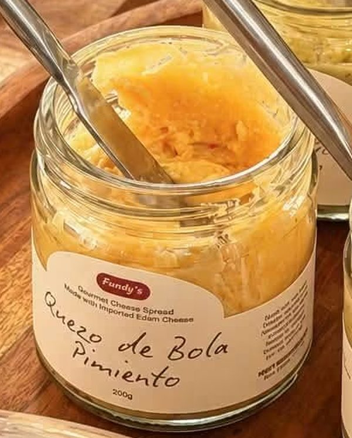
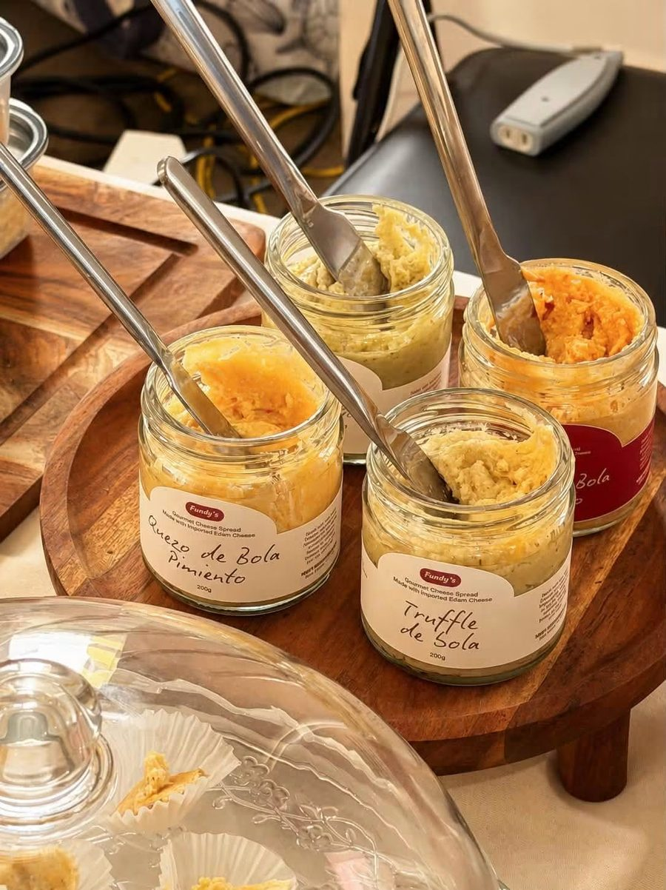
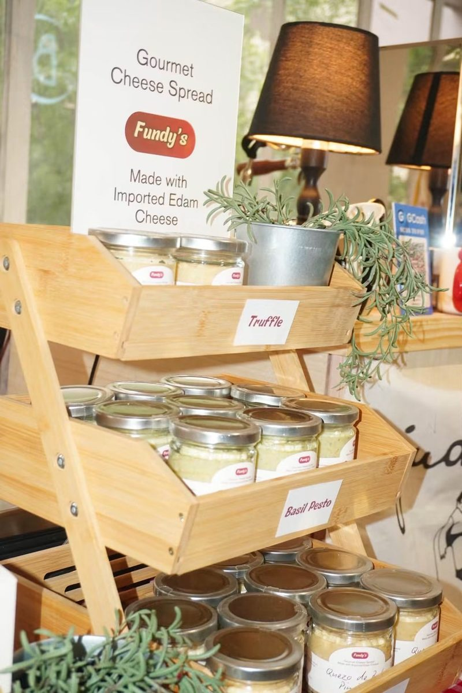
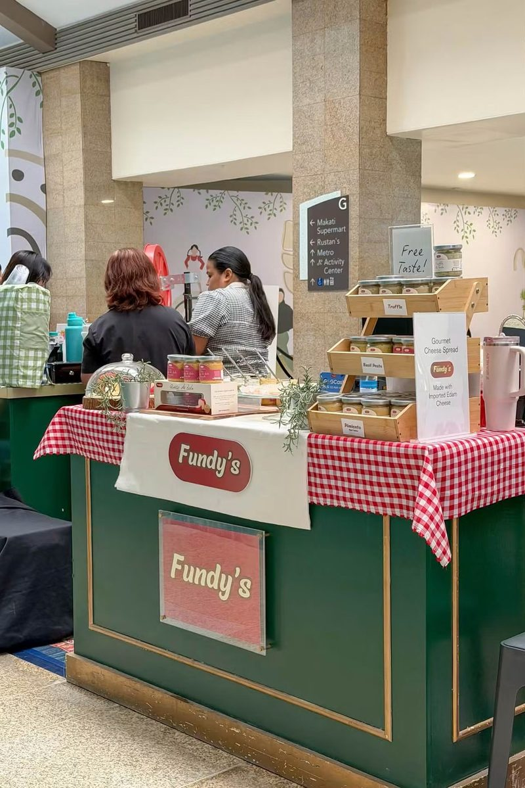

Quezo de Bola Pimiento
200g · Gourmet Cheese Spread
Creamy Edam cheese with pimiento for a sweet, savory twist on the classic Filipino sandwich filling.
₱300
Price may change or be lower in the shop.
Gourmet Palaman · Made in the Philippines
Fundy's turns imported Edam cheese into creamy, spreadable palaman in four flavors. Pimiento, Spicy Pimiento, Truffle and Basil Pesto, ready for your pandesal, crackers and pasta.

The Spreads
Every 200g jar is made with imported Edam cheese. Pick a flavor and order from our Shopee or TikTok Shop store. Prices shown may change or be lower in the shops.

Why Fundy's
Fundy's is a Filipino-made cheese spread built on one idea: start with good cheese. Every jar is made with imported Edam cheese, the same style of cheese behind the beloved quezo de bola, then blended into spreads you can use every day.
Serving Ideas
Split it, spread it, done. The classic Filipino merienda.
Pair truffle or pimiento with crackers for easy party bites.
Use as palaman for loaf bread, ensaymada or sliders.
Stir a spoonful of basil pesto through warm pasta for a quick creamy sauce.
Add a jar to your charcuterie or Noche Buena spread.
A four-jar set makes an easy, tasty regalo.
Where to Buy
Our full range is available on Shopee and TikTok Shop. We also pop up at bazaars and markets, where you can taste before you buy. Follow us for the next one.

Visit our booth to see the jars up close and take home your favorites. Dates and venues are subject to change, so check our Facebook page for the latest updates.
San Juan
Makati
Taguig
Alabang
No booth dates are announced right now. Follow us on Facebook to catch the next one.
Good to Know
Palaman is the Filipino word for a sandwich filling or spread. Fundy's is a gourmet cheese palaman made with imported Edam cheese, ideal for pandesal, loaf bread, crackers and more.
Quezo de Bola Pimiento, Spicy Quezo de Bola Pimiento, Truffle de Bola and Basil Pesto de Bola, each in a 200g jar.
Every Fundy's spread is made with imported Edam cheese, the same style of cheese behind the Filipino holiday favorite quezo de bola.
Order through our Shopee and TikTok Shop stores, or find us at bazaars and pop-up markets.
Spread it on warm pandesal, toast or crackers, fold it into sandwiches, stir it through hot pasta, or serve it on a cheese board.
Yes. The 24pcs Quezo de Bola Reseller's Package is available on TikTok Shop. Prices may change or be lower in the shop, so check the listing for the latest price. You can also call or message us on WhatsApp with questions.
See the Upcoming Booths in the Where to Buy section for our latest dates and venues, or follow our Facebook page for updates.
Get in Touch
Message or call us about orders, bulk packs and reseller packages.